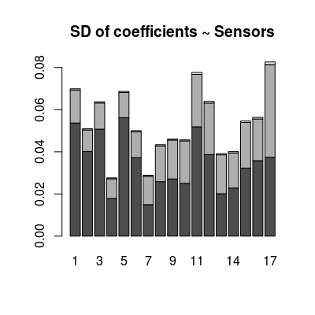

The dataset contains the statistics on degradation in the individual performance of UNIMAN sensor in terms of standard deviation of sensitivity coefficients computed over the long-term UNIMAN dataset.
The datasets has one variable Bsd of the class
list. The sd values themselves are stored in a
matrix of 3 rows and 17 columns under two categories:
class |
The class name:
SensorModel and Sensor. |
model
|
The model name: mvr and plsr. |
Error in find.package(package, lib.loc, verbose = verbose): there is no package called ‘chemosensors’List of 1 $ Bsd:List of 2 ..$ SensorModel:List of 4 .. ..$ plsr : num [1:3, 1:17] 0.053703 0.015644 0.000573 0.040179 0.010242 ... .. ..$ mvr : num [1:3, 1:17] 0.053703 0.015644 0.000573 0.040179 0.010242 ... .. ..$ broken-stick: num [1:3, 1:17] 0.058129 0.013548 0.000392 0.04458 0.011019 ... .. ..$ ispline : num [1:9, 1:17] 1.10e-01 2.17e-01 5.55e-17 4.64e-02 5.63e-02 ... ..$ Sensor :List of 4 .. ..$ plsr : num [1:3, 1:17] 0.04712 0.03075 0.00291 0.0363 0.02512 ... .. ..$ mvr : num [1:3, 1:17] 0.04712 0.03075 0.00291 0.0363 0.02512 ... .. ..$ broken-stick: num [1:3, 1:17] 0.0831 0.01804 0.00212 0.06764 0.01457 ... .. ..$ ispline : num [1:9, 1:17] 0.1816 0.1297 0.4216 0.0365 0.0272 ...List of 2 $ SensorModel:List of 4 ..$ plsr : num [1:3, 1:17] 0.053703 0.015644 0.000573 0.040179 0.010242 ... ..$ mvr : num [1:3, 1:17] 0.053703 0.015644 0.000573 0.040179 0.010242 ... ..$ broken-stick: num [1:3, 1:17] 0.058129 0.013548 0.000392 0.04458 0.011019 ... ..$ ispline : num [1:9, 1:17] 1.10e-01 2.17e-01 5.55e-17 4.64e-02 5.63e-02 ... $ Sensor :List of 4 ..$ plsr : num [1:3, 1:17] 0.04712 0.03075 0.00291 0.0363 0.02512 ... ..$ mvr : num [1:3, 1:17] 0.04712 0.03075 0.00291 0.0363 0.02512 ... ..$ broken-stick: num [1:3, 1:17] 0.0831 0.01804 0.00212 0.06764 0.01457 ... ..$ ispline : num [1:9, 1:17] 0.1816 0.1297 0.4216 0.0365 0.0272 ...# SD values for beta-coefficients in the case of 'SensorModel/mvr' bsd <- Bsd[["SensorModel"]][["mvr"]] print(dim(bsd)) # 3 gases, 17 sensors[1] 3 17[,1] [,2] [,3] Min. 0.01496 0.009355 0.0004520 1st Qu. 0.02506 0.012430 0.0005113 Median 0.03580 0.017000 0.0005659 Mean 0.03459 0.018280 0.0006372 3rd Qu. 0.04018 0.020130 0.0006821 Max. 0.05622 0.043980 0.0012100
SensorNoiseClass